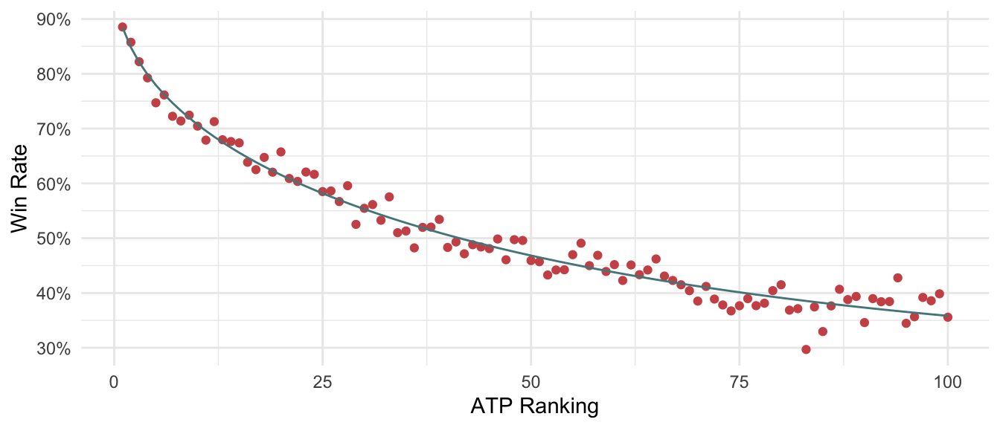

Tennis GOAT
This website displays various rankings and timelines concerning men’s professional tennis. It is intended to provide interesting insights and answer some of eclectic curiosities. Some pages of the site compare the success of the top men’s players and countries at various tournaments. Other pages display player age or birth location trends.
Men’s Professional Tennis has been governed by the Association of Tennis Professionals (ATP) since 1972. The ATP ranks the players and organizes most of the tournaments. The four Grand Slams (Australian Open, French Open, Wimbledon, and US Open) are the most prestigious and popular tournaments. For better or for worse, the careers of the top tennis players are judged by their results at these Grand Slams.
Career Scoring System
In particular, I utilize a scoring system to measure the success of professional male tennis players in Grand Slam Tournaments in the Open Era (from 1968 onward). In this scoring system, players earn points for defeating players and advancing far in one of the four Grand Slam Tournaments each year. Players earn “victory points” in victories corresponding to their opponent’s official ranking.
At first, a reward that is linearly proportional to the opponent’s rank seems natural. For example, players could earn 100 points for beating the world number 1, 99 points for defeating the world number 2, etc. But, in reality, players’ skill is not linear across the world rankings. Figure 1 demonstrates that the win rate over the players’ ranking is parabolic. I estimated the relationship of match win rate y and world ranking r with the line \(\hat{y}(r) = \beta_0 + \beta_1r + \beta_2\sqrt{r}\). This crude estimation helps to value victories relative to the expected difficulty of the match.
If victorious, players earn points proportional to the expected win rate \(\hat{y}(r)\) associated with their opponent’s ranking.
\[points = \frac{99[\hat{y}(r) - n]}{m - n} + 1\]
where \(n = \hat{y}(100) = 0.358\) and \(m = \hat{y}(1) = 0.885\). After simplifying, \(points = 52.119\hat{y}(r) - 18.673\).
Players lose victory points at a rate proportional to their opponent’s ranking for each loss. This equation is much simpler: \(points = -.5r\).

Moreover, players earn bonus points for advancing far in tournaments.
Round | Points |
|---|---|
Quarterfinal | 10 |
Semifinal | 30 |
Final | 60 |
Champion | 100 |
Rankings
The ATP released its first international tennis ranking on August 23, 1973. From 1973 onward, the ATP released updated rankings at several points in the season. Until the early 1980s, however, the ranking updates came at irregular intervals. Thus, at many Grand Slam tournaments in the 1970s, players’ rankings had not been updated in several months. To make matters worse, in the 1970s, it was common for the ATP’s rankings to only include the top 50 players. This makes comparison with more recent years difficult. For this reason, I have turned to Ultimate Tennis Statistics’ ELO ratings for Grand Slam matches in the late 1960s and 1970s. If a player is not included in the official ATP ranking, then the algorithm uses the players’ ELO ranking.
The match and rank data is courtesy of Jeff Sackmann’s Github and ultimate tennis statistics. The data is updated through the 2024 Australian Open. Thus, results from the 2024 French Open, 2024 Wimbledon, and 2024 US Open are not included. This significantly impacts the rankings of players like Carlos Alcaraz and Jannik Sinner.
This website has been edited, produced, and published by Caleb A. Skinner in R Quarto via GitPages.